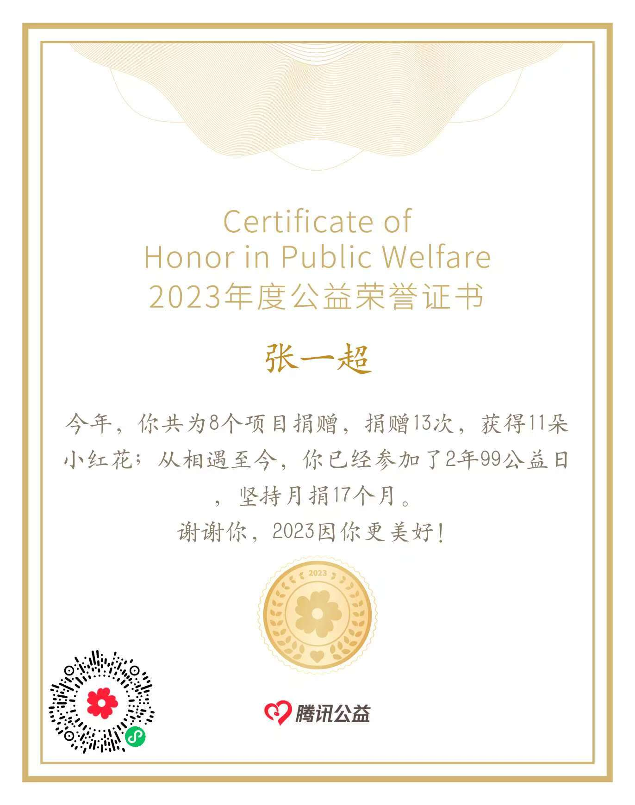
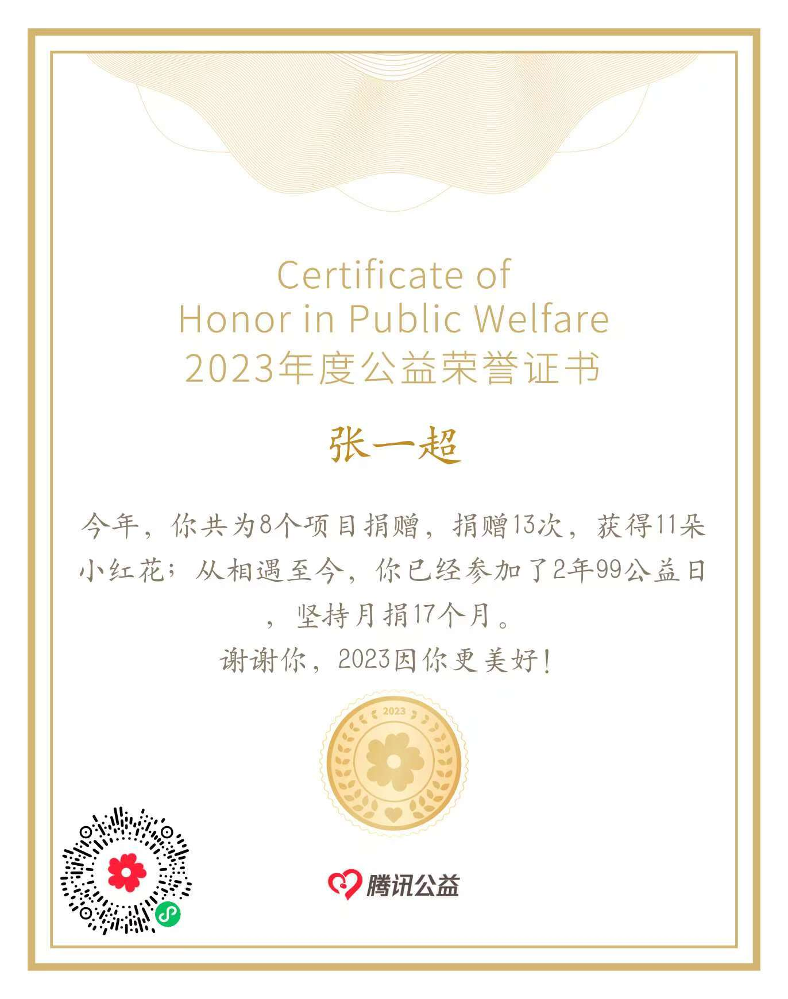

Honors & Achievements
Scientific Research
My research endeavors have been recognized through several prestigious honors and awards. During my participation in the Youth Science Talent Program, I distinguished myself among provincial peers and earned the "Outstanding Award of Trainees" at Zhejiang University's summer camp. Additionally, my research project on hospital volunteer services was awarded the Third Prize in the school-level social practice paper competition, reflecting my commitment to applying academic inquiry to real-world issues.
Youth Science Talent Program Certificates
Hospital Volunteer Service Research Project Award
Academic & Comprehensive Performance
Academic Performance
I have maintained excellent academic performance throughout my middle and high school years, with particular strengths in science subjects. As early as elementary school, I demonstrated a natural aptitude for mathematics, which fostered a lifelong passion for STEM disciplines. My consistent academic excellence reflects my dedication to intellectual growth and mastery of foundational knowledge.
Comprehensive Abilities
I actively participate in various extracurricular activities and am committed to helping peers. During high school, I served as Class Monitor and Math Class Representative, which honed my organizational skills and leadership abilities. I take pride in contributing to a positive class environment and am dedicated to serving my classmates with enthusiasm and responsibility.
Hobbies & Social Service
Hobbies & Interests
I have a wide range of interests, with a particular passion for drones and aerospace/nautical models. In sports, I enjoy playing table tennis. During elementary and middle school, I participated in numerous model competitions, which ignited my deep interest in science and engineering. I am also a skilled FPV drone pilot, combining technical precision with creative flying.
Social Service
I am deeply passionate about social service and regularly participate in volunteer activities and charitable donations. I consistently donate my saved pocket money to charitable organizations, believing in the importance of giving back to the community. I also hold the conviction that scientific research should ultimately benefit society and address real-world challenges.

 
